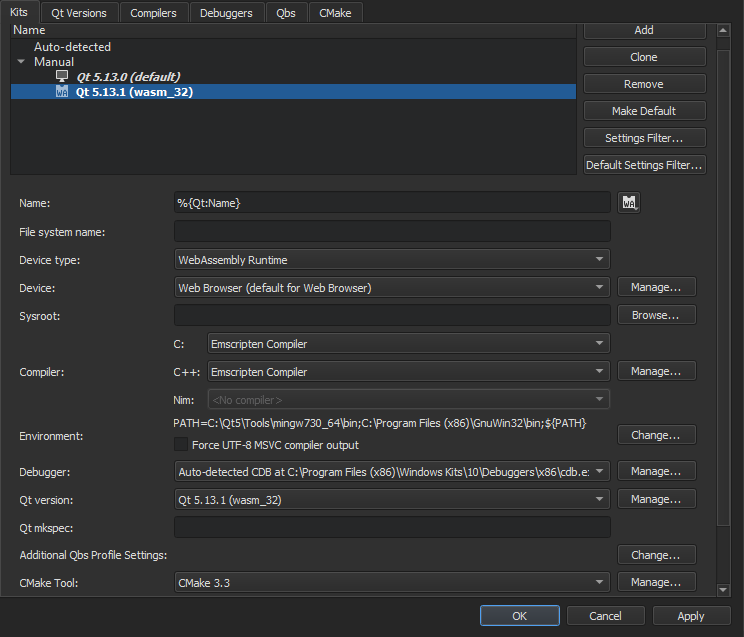

Building Applications for the Web
WebAssembly is a binary format that allows sand-boxed executable code in web pages. This format is nearly as fast as native machine code, and is now supported by all major web browsers.
Qt for WebAssembly enables building Qt applications so that they can be integrated into web pages. It doesn't require any client-side installations and reduces the use of server-side resources.
The experimental WebAssembly plugin enables you to build your applications in WebAssembly format and deploy and run them in the local web browser. You can change the web browser in the project run settings.
To build applications for the web and run them in a web browser, you need to install Qt for WebAssembly and the tool chain for compiling to WebAssembly, as well as add a build and run kit in Qt Creator.
Requirements
You need the following software to build Qt applications for the web and run them in a browser:
- Qt for WebAssembly 5.13.1, or later
- On Windows: MinGW 7.3.0, or later
- emscripten tool chain for compiling to WebAssembly
sedstream editor
Note: You need to add the location of the MinGW and sed installation folders to the system path, either globally or for the Qt for WebAssembly kit.
Setting Up the Development Environment
To configure Qt Creator for building Qt apps for the web and running them in a web browser:
- Use the Qt maintenance tool to install Qt for WebAssembly and, on Windows, MinGW (found in Developer and Designer Tools).
- Check out
emsdkand install and activateemscripten, as instructed in Qt for WebAssembly. - On Windows, you have to download and install
sed, as instructed in sed for Windows, and add its location to the system PATH. - In Qt Creator, select Help > About Plugins > Device Support > WebAssembly to enable the plugin.
- Restart Qt Creator to be able to use the plugin.
- Select Tools > Options > Kits > Qt Versions > Add to add Qt for WebAssembly (wasm_32).
- Select Tools > Options > Kits > Add to add a kit for building applications for the web:

- In the Name field, specify a name for the kit.
- In the Device type field, select WebAssembly Runtime. The value of the Device field is automatically set to Web Browser.
- In the Compiler field, select Emscripten Compiler for both C and C++.
- Select Change next to the Environment field to append the locations where you installed MinGW and
sedto the PATH variable. For example, on Windows:PATH=C:\Qt\Tools\mingw730_64\bin;C:\Program Files (x86)\GnuWin32\bin;${PATH} - Select Apply to add the kit.
- Open a project for an application you want to run in a web browser.
- Select Projects > Build & Run, and then select the WebAssembly kit as the build and run kit for the project.
- Select Run to specify run settings.
- In the Browser field, select the browser to run the application in.

You can now build Qt applications in WebAssembly format and run them in a web browser as described in Building for Multiple Platforms and Running on Multiple Platforms.